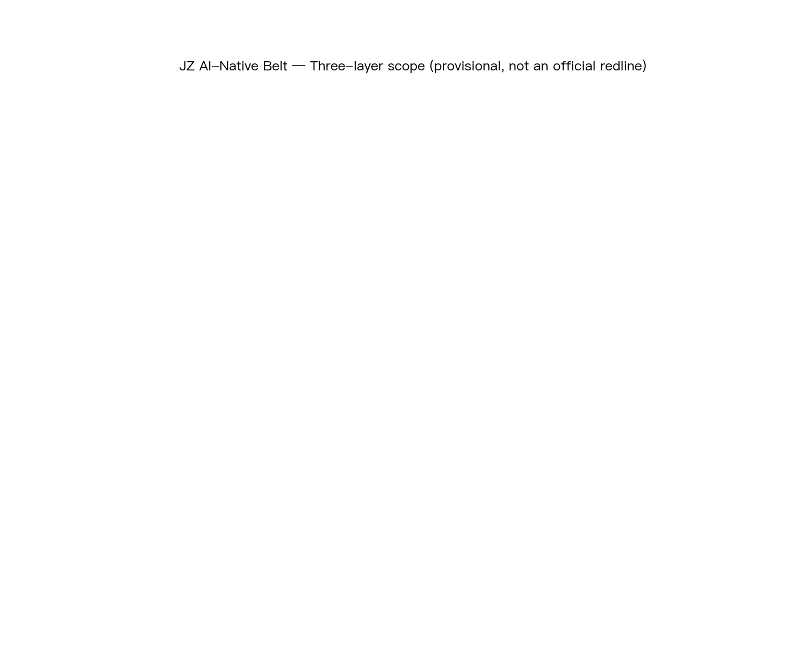
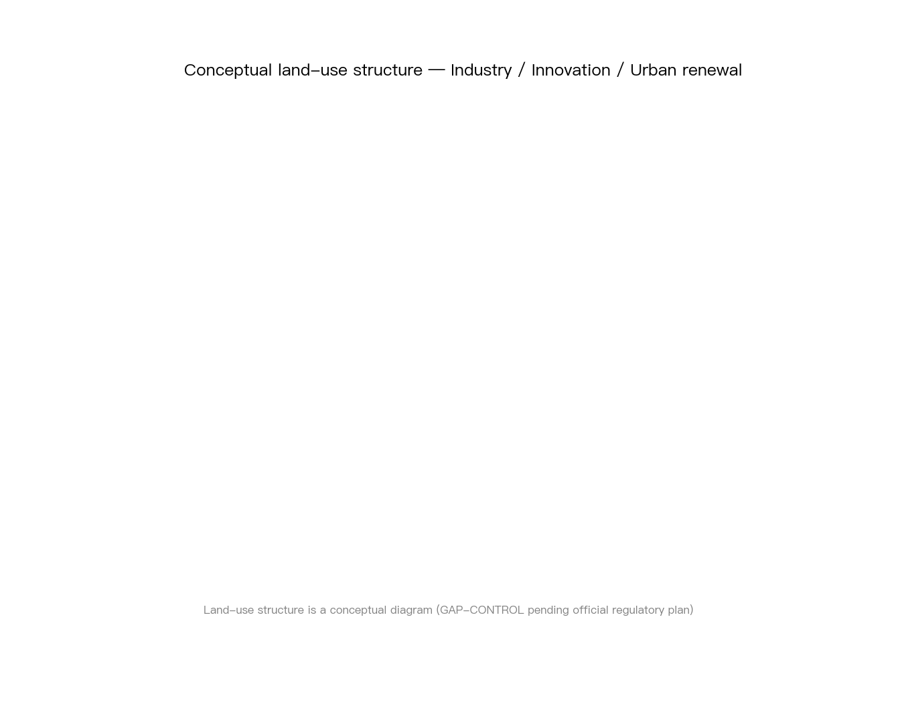
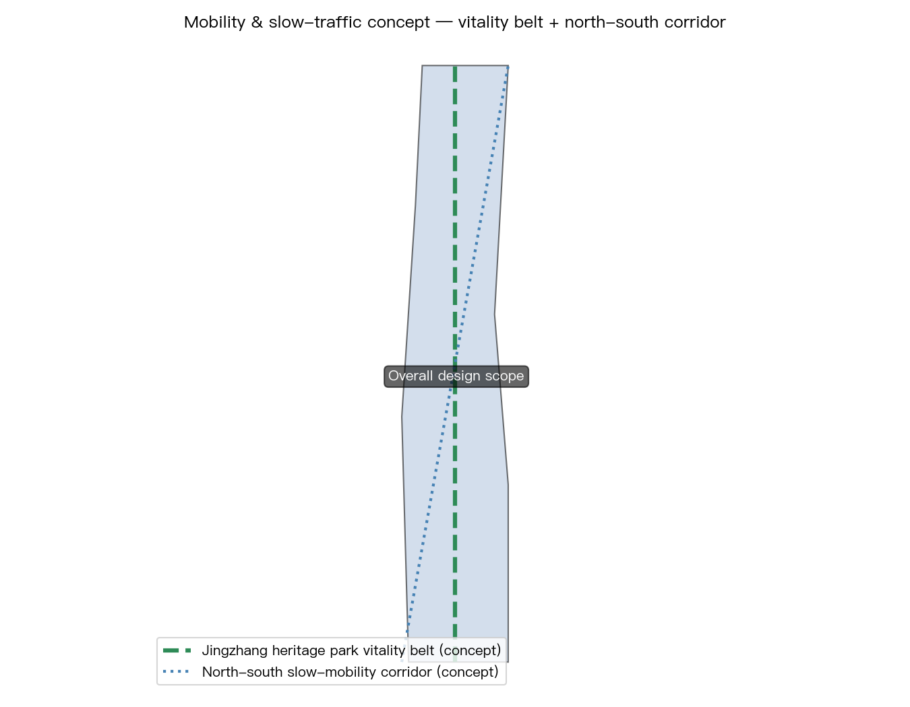
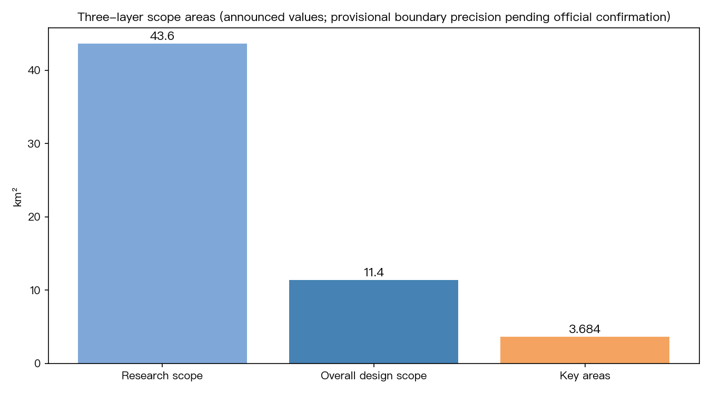

⚠️ This proposal is generated from provisional boundaries and public sources as an AI-agent entry to a real urban design call; it is not an official planning conclusion.

| Layer | Question | Spatial carrier |
|---|---|---|
| Ecosystem | How does the AI innovation ecosystem grow | Zhongzhi Park (full-stack autonomy) / Origin Community (talent near universities) / Dazhongsi (industry clustering) |
| Services | How do AI+ public services land | 10 scenario cards (open source / sandbox / stations / slow mobility / roadshow / low-carbon / transfer / data / life / activity week) |
| Facilities | How is an AI-native city carried | Public data foundation + edge compute + AI identity network |
| ⚖️ Governance base | How is an AI city trustworthy | Four-capability framework: governable → controllable → trustworthy → sustainable |


蓝绿廊道与开放空间沿京张走廊穿插布局，承担生态缓冲与公共活动功能；具体图层见 geometry/green_space.geojson 与 geometry/public_space.geojson。
建筑规模与拆改留方案见 geometry/buildings.geojson 与正文用地章节；新建、保留、拆除以设计意图表达，provisional 边界下不做法定规模承诺。
更新项目清单、实施政策与分期计划见正文第 10 章与 geometry/phasing.geojson。
| # | Scenario | Location | Compliance label |
|---|---|---|---|
| 01 | Open-source release hall | Origin Community | Copyright / open-source license compliance |
| 02 | Safe governance sandbox | Zhongzhi Park | Governance as infrastructure (aligned with AI Verify) |
| 03 | Edge-compute stations | Overall scope | Compute as a public good |
| 04 | AI slow-mobility navigation | Heritage park | Anti-over-surveillance |
| 05 | International roadshow lounge | Dazhongsi | Cross-border data compliance |
| 06 | Qinghe low-carbon corridor | Zhongzhi Park | Green/blue line constraints |
| 07 | Commercialization street | Origin Community | IP boundary |
| 08 | Data element lounge | Dazhongsi | Data compliance first |
| 09 | Lifestyle services demo street | Community | Public-service compliance (GB 45438) |
| 10 | AI activity week route | The Belt | Event operation compliance |
Task coverage: this proposal covers agent.1–agent.6 of the agent taskbook (scope, ecosystem and scenarios, land use and demolition/retention, transport and infrastructure, green-blue and public space, metrics and compliance matrix); see the body and design_depth_matrix.json.
Self-check status: recorded in self_check.json after the four gates (deterministic / spatial / visual / professional) pass; see manifest.validation_claim.
Sources: sources.json registers 20 traceable entries (announcement, taskbook, case references and provisional data).
Assumptions: assumptions.json registers 1 explicit assumptions (provisional boundary and official-data gaps).
Singapore (governance as infrastructure) · Hangzhou (City Brain) · Shenzhen (full-stack autonomy) · Silicon Valley (talent loop) · Tel Aviv (revolving door) · Austin (university symbiosis) — the shared conclusion: successful AI innovation ecosystems embed governance as infrastructure.
Governable (institutions: laws/standards/permits) → Controllable (inspection: safety testing/audits) → Trustworthy (disclosure: labelling/transparency/accountability) → Sustainable (updates: versioned rule libraries). Governance does not constrain innovation; it is what makes an AI city trustworthy and attractive.
site_boundary / key_areas (provisional_constraint) · metrics (announced values + governance indicators) · see the full report.
